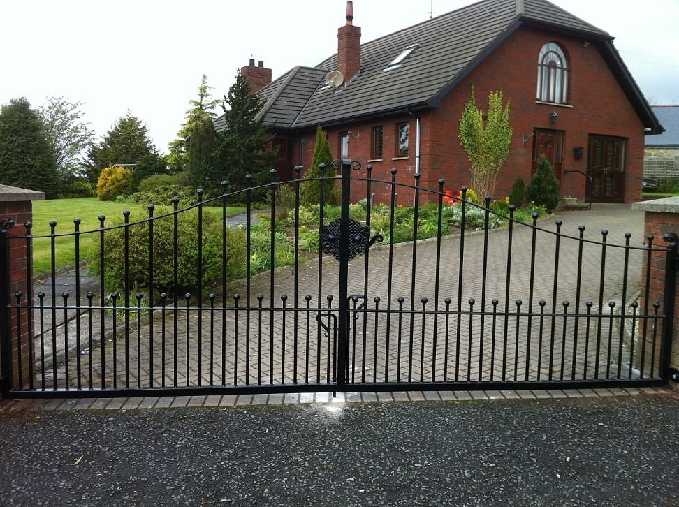
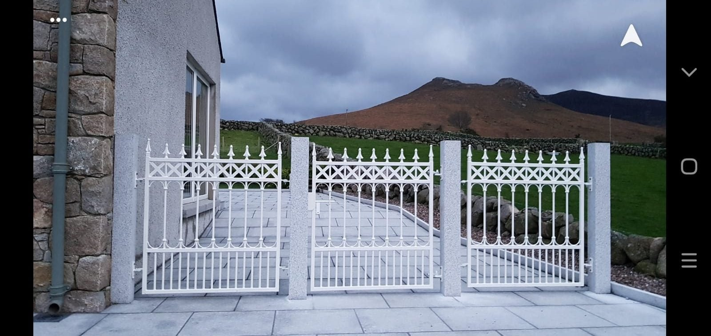
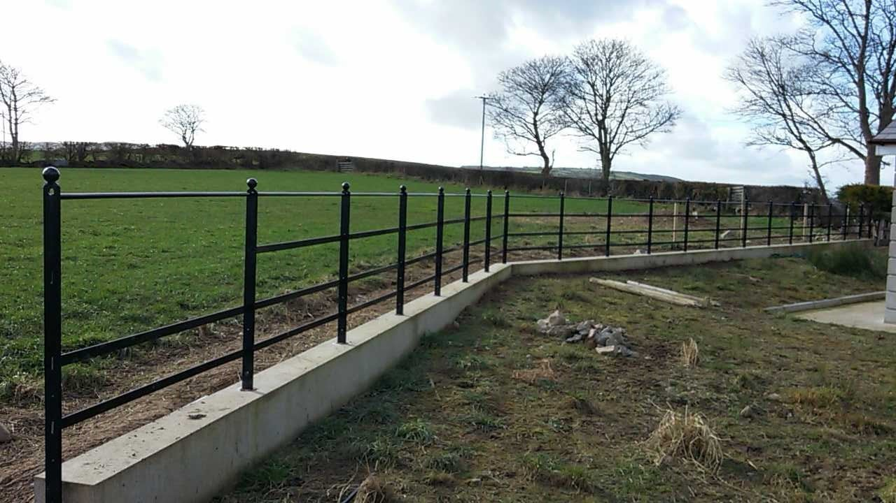
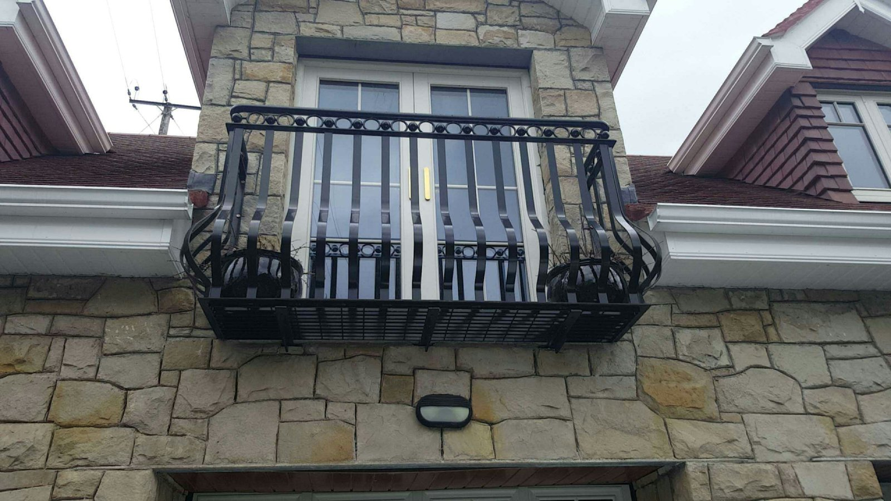

BUSINESS GALLERY
Made to belong.
Explore the work, equipment and possibilities. Discuss what you have in mind with the team.
9 photographs

Farm Buildings
Completed steel farm building ↗

Structural Steel
Steel building framework under construction ↗

Gates
Double entrance gates beside a home ↗

Gates
Decorative metal entrance gates ↗

Gates
Decorative double entrance gates ↗

Gates
White decorative double gates ↗

Railings
Metal fencing along a rural boundary ↗

Balconies
Project balcony and railings at a home ↗

Balconies